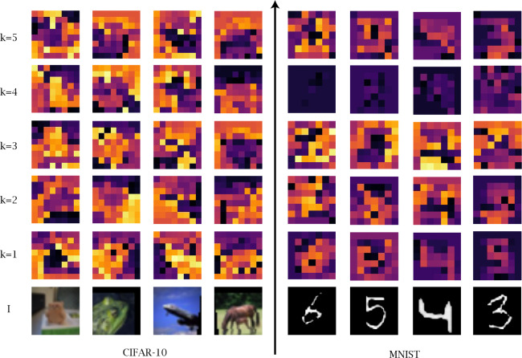
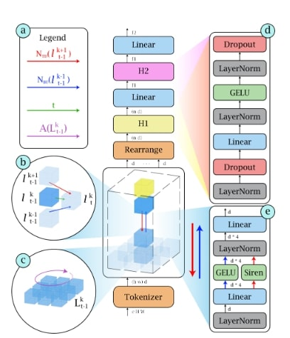
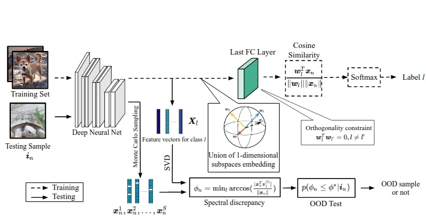
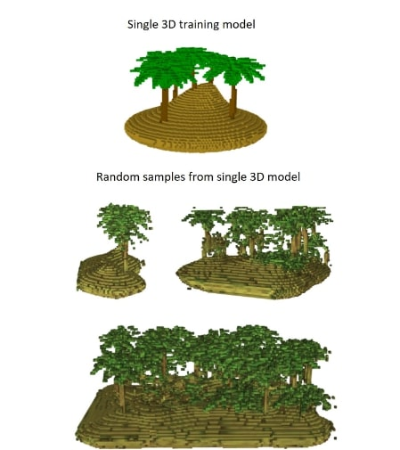

|
I am a postdoctoral researcher at the University of Verona, collaborating with EVS (Embedded Vision Systems), where I focus on 3D reconstruction and human pose estimation. My research is positioned at the intersection of machine learning, computer vision, and computer graphics.
I completed my Ph.D. at the University of Trento under the supervision of Prof. Nicola Conci. During my doctoral studies, I explored topics such as learning interpretable representations in neural networks and developing efficient 3D neural representations. I also had the opportunity to spend four months at Simon Fraser University, advised by Prof. Andrea Tagliasacchi. Email / CV / Google Scholar / Github |
{kind=link}
|
I am interested in computer vision, machine learning, and computer graphics. |

|
Shrisudhan Govindarajan*, Zeno Sambugaro*, Ahan Shabanov, Towaki Takikawa, Daniel Rebain, Weiwei Sun, Nicola Conci, Kwang Moo Yi, Andrea Tagliasacchi arXiv / Page |
|  |
Zeno Sambugaro, Nicola Garau, Niccolo Bisagno, Nicola Conci Computer Vision and Image Understanding JournalarXiv / Code |
|  |
Nicola Garau, Niccolo Bisagno, Zeno Sambugaro, Nicola Conci CVPR 2022arXiv / Code |
|  |
A Zaeemzadeh, Niccolo Bisagno, Zeno Sambugaro, Nicola Conci, Nazanin Rahnavard, Mubarak Shah CVPR 2021arXiv / Code |
|  |
Zeno Sambugaro, Marco Merlin, Nicola Conci IVMSP 2022arXiv / Code |
|
|
|
Source code based on Jon Barron's website. |